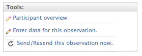
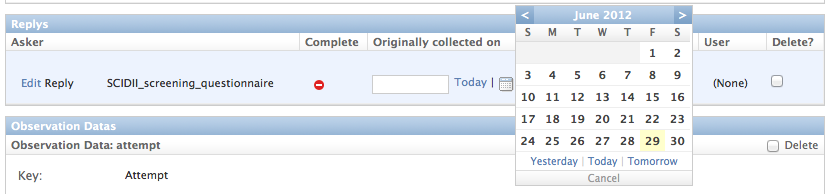

An signalbox.models.Observation represents an occasion on which a measurement can be taken.
A signalbox.models.Reply collates a set of responses made for an Observation, on a single occasion.
Multiple replies can therefore be made for a single Observations. There may happen when:
Where multiple replies are made for an observation it is important to distinguish which should be used — i.e. exported for later analysis. In exported data the canonical_reply variable indicates which row should be preferred for analysis.
Note
If no Reply has been marked as canonical, multiple replies can be exported with none of them marked as canonical.
Note
The is_canonical_reply field on the Reply determines whether a reply should be considered canonical. The signalbox.models.Observation.canonical_reply() method returns the canonical reply for a given Observation and is used when exporting data.
Researchers can identify which reply should be considered canonical, using the view at: /admin/signalbox/resolve/duplicate/replies/(study_id). This can be accessed from the admin page for each study.
Note
It’s probably best to keep on top of duplicate replies as they arise — resolving which was the correct response a long time after the event might be difficult, or impossible.
Sometimes participants won’t be able to enter data for themselves, and researchers will have to enter it for them.
To enter data for someone else, first find the relevant observation (probably by navigating from the user_dashboard), and then click the Enter data for this observation link:
XXX TODO replace
You will be presented with the questionnaire that the user would have seen.
Once complete, you’ll be redirected back to the Observation edit page.
Notice that a new Reply will be listed for that observation
Note
You may need to set the originally_collected_on field of the Reply if the data was collected from the participant sometime before you are entering it into the system. See image below:
XXX TODO replace and update with additional view
Because of limitations of the SMS system itself, where participants reply to an SMS it’s not possible to reliably reconnect their replies explicitly to a particular observation. For this reason, although SMS replies are stored in the database (using the signalbox.models.TextMessageCallback model), the content of SMS replies is not stored as an Answer.
Currently Signalbox makes an attempt to connect the inbound SMS messages with Observations in the following way:
When analysing SMS reply data, it’s probably better to rely on the sender phone number and match these with users’ numbers (e.g. using merge commands in Stata or SPSS).
..warning:: TL;DR: If users reply to SMS messages you will have to do extra work to export this data; it won’t automatically appear in the main datafile.
To export SMS data, use the /admin/data_exports view to create an export. Docs here: http://django-data-exports.readthedocs.org/en/latest/#export-formats